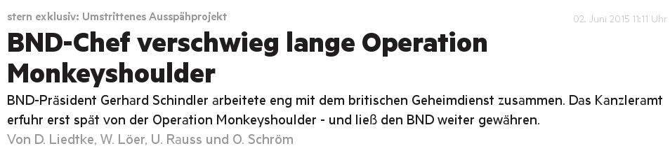

5 Jahre nach Snowden
…was sich politisch getan hat
NSA / BND Untersuchungsausschuss
Kurz und knapp
- Einsetzungsgrund: Snowden-Dokumente
- Nachträglich auf BND erweitert
- Keinerlei strafrechtliche Konsequenzen
NSA-Spionage in Deutschland
Zusammenarbeit mit 5-Eyes-Staaten
Gesetzesbrüche durch den BND
Der BND-Chef muss gehen

Bauernopfer Gerhard Schindel in glücklichen Zeiten
Die Regierung sieht es anders...
Damaliger Ausschuss-Vorsitzender
... wie auch der Generalbundesanwalt
Ermittlungen eingestellt, da keine Beweise vorliegen.
BND-Gesetz
BND-Gesetz
Konsequenz aus dem NSA / BND UA
Befügnisse des BND erweitert
Massenüberwachung (aktuell) legal
BND erhält mehr Geld
Erhöhung um 13% auf 808 Mio € / Jahr
Unternehmen wehren sich
Bisher jedoch kein juristischer Erfolg
Versuchte stärkung der Kontrolle
Wirksamkeit fragwürdig
US-Gesetzgebung
DSGVO
Der Mensch Edward Snowden
Kein EU-Staat zur Aufnahme bereit

Snowden lebt seit seiner Flucht in Russland
Zitate
Zitate
Zitate

Zusammenfassung
'The people are still powerless, but now they're aware'